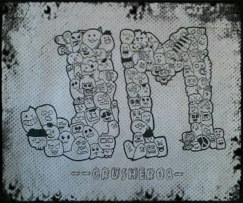

About Me
I'm a part artist and part computer geek. When I was a kid, I used to draw some anime characters; copying them from small cards and I also make doodle arts. I also got engage with computers, browsing the web, and playing online games. It brought me to realization to combine my litte talent in art and interest in technology. Then I learn about web and software development through Brigham Young University-Idaho as an online student.
I chose Brigham Young University-Idaho not because they are offering degrees online for little amount of money. I was caught by its mission to develop each student to become leaders in their homes, community, and church. The university's mission statement is not just written to display but something that is applied by the university's officers, faculty, and students.
